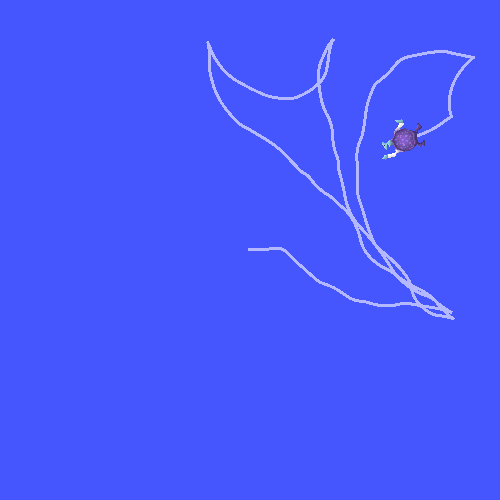
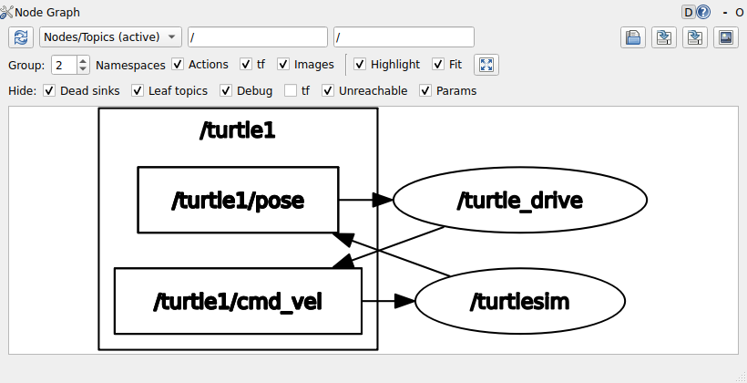

토픽 프로그래밍 — 발행자·구독자·타이머
- 내 노드가
/turtle1/cmd_vel에 속도 명령을 보내려면 코드에 무엇이 있어야 하나? - 「0.5초마다 한 번」을 코드로는 어떻게 적나?
while과sleep으로 적으면 무엇이 안 되나? - 받은 메시지는 콜백에서 어떤 모양으로 받아 두나? 왜
ConstSharedPtr인가? - 달리는 중에 내 노드를 Ctrl+C로 끊으면 거북이는 서나, 마지막 속도로 계속 가나?
- AI가 준 노드 코드가 빌드된다. 그래도 무엇을 확인하면 되나?
19회에 만든 hello_node는 그래프에 이름만 올렸을 뿐 어느 화살표에도 이어져 있지 않았다.
오늘은 같은 패키지 turtle_drive에 실행 파일을 하나 더 넣는다. 이름은 패키지와 같은 turtle_drive —
거북이를 무작위로 돌아다니게 하다가, 벽에 가까워지면 중앙 쪽으로 돌려세워 다시 출발시키는 노드다.
이 노드는 21·22회에서도 계속 자란다. 오늘이 그 첫 두 단계다.
노드는 두 단계로 자란다. v1은 0.5초마다 무작위 속도를 보내기만 한다(발행자·타이머). 거북이는 아무 데로나 가다가 결국 벽에 부딪힌다.
v2는 거북이의 자세를 받아서(구독자), 정해 둔 범위를 벗어나면 중앙을 볼 때까지 제자리에서 돌고 다시 출발한다.
두 단계 모두 「함수를 넘겨 두면 때가 됐을 때 불러 주는」 콜백으로 움직이고, 그 콜백을 부르는 것은 19회의 rclcpp::spin이다.
마지막 ⑥절에서는 다 만든 노드에서 확인할 것 — 두 파일의 의존성, Ctrl+C 때 거북이, 받은 노드 코드에서 볼 일곱 줄 — 을 짧게 짚는다.
한 장 요약
무엇을 먼저 볼지: 오른쪽 열이 받은 노드 코드를 검사할 때 보는 기준이다. 가운데 열은 그것이 코드에서 어떻게 생겼는지다.
| 용어 | 코드에서 이렇게 보인다 | 이것만 알면 된다 |
|---|---|---|
| 발행자(publisher) | create_publisher<geometry_msgs::msg::Twist>("/turtle1/cmd_vel", 10) | 토픽 이름과 메시지 타입을 정해 만들고, publish(msg)로 보낸다. 노드의 멤버로 들고 있는다 |
| 타이머(timer) | create_wall_timer(500ms, [this]() { on_timer(); }) | 「주기마다 할 일」은 while + sleep이 아니라 타이머로 적는다 |
콜백(callback) · rclcpp::spin | rclcpp::spin(node); | 타이머·구독 콜백은 spin 안에서만 불린다. spin이 없으면 구독은 붙어 있어도 콜백이 안 불린다 |
| 구독자(subscription) | create_subscription<turtlesim::msg::Pose>("/turtle1/pose", 10, 콜백) | 메시지가 올 때마다 콜백이 불린다. 콜백은 받아 두기만 하고, 판단은 타이머 쪽에서 한다 |
ConstSharedPtr | void on_pose(turtlesim::msg::Pose::ConstSharedPtr msg) | std::shared_ptr<const Pose>의 타입 별칭. 복사 없이, 고치지 못하게 받고, 그대로 멤버에 들고 있을 수 있다 |
| 큐 깊이(depth) | …("/turtle1/cmd_vel", 10) | 밀렸을 때 쌓아 둘 메시지 수. 보통 10. 뜻을 모르고 1000·1로 바꾸지 않는다 (22회) |
| 의존성 두 곳 | <depend>turtlesim</depend> · ${turtlesim_TARGETS} | 메시지 패키지도 19회 규칙 그대로 package.xml과 CMakeLists.txt 양쪽에 |
| cmd_vel 타임아웃 | (turtlesim 쪽의 규칙) | turtlesim은 속도 명령이 약 1초 끊기면 거북이를 세운다. 그 1초 동안은 마지막 속도로 간다 |
spin이 때가 됐을 때 불러 준다」는 같은 구조다.
이 구조를 알면 spin 없이 while로 도는 코드에서 구독 콜백이 왜 한 번도 안 불리는지가 한 줄로 설명된다(⑥절).
① turtle_drive와 두 토픽 — /turtle1/cmd_vel · /turtle1/pose 🔴 사람이 한다
코드를 쓰기 전에 무엇을 보내고 무엇을 받을지부터 정해야 한다. 토픽 이름이 하나만 틀려도 노드는 멀쩡히 돌면서 아무 일도 하지 않는다(18회 「막혔을 때 보는 순서」). 그래서 첫 일은 18회 명령으로 토픽 이름과 타입을 직접 확인하는 것이다. turtlesim을 띄우고 다른 터미널에서 친다.
$ ros2 topic list -t
/parameter_events [rcl_interfaces/msg/ParameterEvent]
/rosout [rcl_interfaces/msg/Log]
/turtle1/cmd_vel [geometry_msgs/msg/Twist]
/turtle1/color_sensor [turtlesim/msg/Color]
/turtle1/pose [turtlesim/msg/Pose]
$ ros2 interface show turtlesim/msg/Pose
float32 x
float32 y
float32 theta
float32 linear_velocity
float32 angular_velocity
$ ros2 topic echo --once /turtle1/pose
x: 5.544444561004639
y: 5.544444561004639
theta: 0.0
linear_velocity: 0.0
angular_velocity: 0.0
---
거북이는 (5.54, 5.54)에서 theta 0, 즉 오른쪽(+x)을 보고 태어난다. 창의 한 변은 약 11 m이고, 거북이가 태어난 자리가 그 한가운데다.
17회에서 인터페이스 이름 세 토막이 그대로 C++ 헤더와 타입 이름이 된다고 했다. 오늘 쓸 두 메시지를 그 규칙으로 옮기면 이렇다.
| 토픽 | 인터페이스 | C++ 헤더 | C++ 타입 | turtle_drive에서 |
|---|---|---|---|---|
/turtle1/cmd_vel | geometry_msgs/msg/Twist | "geometry_msgs/msg/twist.hpp" | geometry_msgs::msg::Twist | 보낸다 (v1부터) |
/turtle1/pose | turtlesim/msg/Pose | "turtlesim/msg/pose.hpp" | turtlesim::msg::Pose | 받는다 (v2부터) |
ls /opt/ros/jazzy/include/turtlesim/turtlesim/msg/에 pose.hpp가, …/geometry_msgs/geometry_msgs/msg/에 twist.hpp가 있다.
AI가 준 코드의 #include 줄이 이 표와 다르면(예: turtlesim/Pose.h) ROS 1 시절 이름이다(17회).
두 단계에서 무엇이 더해지는지 먼저 한 표로 본다.
| 단계 | 더하는 것 | 거북이는 | 새 의존성 |
|---|---|---|---|
| v1 (③절) | 발행자 · 타이머 · 무작위 속도 | 아무 데로나 돌아다니다 벽에 부딪힌다 | geometry_msgs |
| v2 (⑤절) | 구독자 · 범위 판정 · 중앙 쪽으로 돌아서기 | 1 ~ 10 안에서 돌아다니고, 벗어나면 중앙 쪽으로 돌아선다 | turtlesim |
② 발행자(publisher) — create_publisher와 publish 🟡 맡기되 검사
개념 — 토픽 하나에 보내는 창구
17회에서 토픽은 「발행자가 보내고 구독자가 받는, 이름 붙은 데이터 흐름」이었다. 코드에서 발행자는 그 흐름에 메시지를 넣는 객체다.
토픽 이름 하나와 메시지 타입 하나로 만들고, 만든 뒤에는 그 타입의 메시지만 넣을 수 있다.
18회 ros2 topic pub이 터미널에서 하던 일을 코드가 하는 것이다.
// 만들 때 — 노드의 멤버 함수로 만든다. 꺾쇠 안이 메시지 타입, 괄호 안이 토픽 이름과 큐 깊이
cmd_pub_ = this->create_publisher<geometry_msgs::msg::Twist>("/turtle1/cmd_vel", 10);
// 보낼 때 — 메시지 객체를 만들어 칸을 채우고 넘긴다
geometry_msgs::msg::Twist cmd;
cmd.linear.x = 1.0;
cmd_pub_->publish(cmd);발행자는 노드가 살아 있는 동안 계속 있어야 한다. 그래서 생성자의 지역 변수가 아니라 클래스의 멤버 변수로 들고 있는다. 19회 v3에서 인사말을 멤버로 옮기며 「20회에서 발행자가 이 자리에 들어간다」고 한 것이 이것이다. 생성자 안의 지역 변수에 두면 생성자가 끝나는 순간 발행자가 사라지고, 토픽에서도 빠진다.
| 칸 | 모양 | 무엇을 보나 |
|---|---|---|
| 메시지 타입 | <geometry_msgs::msg::Twist> | ros2 topic list -t의 타입과 같은가 (①절 표) |
| 토픽 이름 | "/turtle1/cmd_vel" | ros2 topic list에 있는 이름과 한 글자도 안 틀리게 같은가 |
| 큐 깊이 | 10 | 10이면 된다. 다른 숫자라면 이유가 있는가 (아래 🆕) |
| 받는 변수 | cmd_pub_ (멤버) | 전역 변수나 생성자 지역 변수가 아닌가 |
🆕 이 코드에서 처음 나오는 것
- this->create_publisher<T>("토픽", 10)
rclcpp::Node에서 물려받은 멤버 함수. T 타입 메시지를 그 토픽에 보내는 발행자를 만들어shared_ptr로 돌려준다. 꺾쇠 안은 7회의 템플릿 인자다. 여기서는/turtle1/cmd_vel에Twist를 보내는 발행자를 만들었다.- 큐 깊이 10 (history depth)
- 보내는 쪽이나 받는 쪽이 밀렸을 때 최근 메시지를 몇 개까지 쌓아 둘지다. 넘치면 오래된 것부터 버린다. 인터넷 예제에 자주 보이는
rclcpp::QoS(rclcpp::KeepLast(10))는 이것을 풀어 쓴 모양이다. 18회topic info -v의History (Depth)칸이 이것이다. 속도 명령은 최신 것만 의미가 있으니 크게 둘 이유가 없다. - cmd_pub_->publish(cmd)
- 메시지 하나를 토픽에 내보낸다. 18회
topic pub의publishing #1처럼 「보냈다」는 뜻이지 「누가 받았다」는 뜻이 아니다. 받았는지는 받는 쪽(거북이)을 본다. - rclcpp::Publisher<T>::SharedPtr
- 발행자를 들고 있는 멤버의 타입. 11회에서 본 타입 별칭
SharedPtr— 실제로는std::shared_ptr<rclcpp::Publisher<T>>다.
큐 깊이와 QoS를 제대로 다루는 곳: 22회
③ 타이머(timer)와 콜백(callback) — create_wall_timer · rclcpp::spin (v1) 🟡 맡기되 검사
개념 — 주기마다 부르는 함수, 그것을 부르는 spin
발행자는 만들었는데 언제 publish를 부를까? 생성자에서 한 번 부르고 끝내면 안 될까?
18회에서 topic pub --once로 한 번 보냈을 때 거북이가 짧은 호를 그리고 멈췄다. turtlesim은 속도 명령이 1초 넘게 안 오면 거북이를 세운다.
거북이를 계속 가게 하려면 명령을 계속, 일정한 간격으로 보내야 한다.
「일정한 간격으로」를 2부 방식으로 적으면 while 반복 안에 sleep을 넣는 모양이 된다. 이것도 발행은 된다.
그런데 오늘 노드는 보내기만 하지 않는다 — v2에서는 거북이의 자세를 받아야 한다. 자세는 언제 올지 내가 정하지 못한다.
while이 main을 붙잡고 있으면 그 사이에 온 메시지를 처리할 자리가 없다.
그래서 ROS 2는 거꾸로 묻는다. 「주기마다, 또는 메시지가 오면 무엇을 할지 함수로 미리 넘겨 달라. 때가 되면 내가 부르겠다.」
이렇게 넘겨 두었다가 나중에 불리는 함수를 콜백(callback, 「나중에 다시 불러 준다」)이라고 한다. 14회에서 「저장해 뒀다가 나중에 부르는 람다」를 봤는데, 그것이 바로 콜백이다.
주기마다 콜백을 불러 주는 객체가 타이머이고, 때가 됐는지 살피다가 콜백을 부르는 일을 하는 것이 19회의 rclcpp::spin이다.
// 주기와 콜백을 넘겨 만든다. 이 객체가 살아 있는 동안 spin 이 주기마다 콜백을 부른다
timer_ = this->create_wall_timer(500ms, [this]() { on_timer(); });
int main(int argc, char ** argv)
{
rclcpp::init(argc, argv);
auto node = std::make_shared<TurtleDrive>(); // 생성자에서 발행자·타이머를 만들고 콜백을 넘긴다
rclcpp::spin(node); // 여기서 기다리다가 때가 될 때마다 콜백을 부른다
rclcpp::shutdown();
return 0;
}while + sleep_for | create_wall_timer + spin | |
|---|---|---|
| 주기는 누가 지키나 | 내 반복문 | spin |
| 그동안 구독 콜백은 | 안 불린다 (반복문 안에서 따로 불러 주지 않는 한) | 사이사이에 불린다 |
| Ctrl+C를 누르면 | 반복 조건에 rclcpp::ok()가 있어야 끝난다 | spin이 돌아온다 |
| 주기를 바꾸려면 | 반복문 안을 고친다 | 숫자 하나(500ms)를 고친다 |
spin 안에서만 불린다. 메시지가 컴퓨터에 도착해도 spin이 돌지 않으면 아무도 그 콜백을 부르지 않는다.
둘째, 기본 rclcpp::spin은 콜백을 한 번에 하나씩 부른다. 한 콜백이 오래 걸리면 다른 콜백이 그만큼 기다린다 — 그래서 콜백은 짧게 쓴다. 이 기다림이 실제로 얼마나 되는지는 22회에서 시간을 재어 본다.
v1만 놓고 보면 while과 차이가 안 보인다. 차이는 구독이 더해지는 v2에서 드러난다. ⑥절 검사 목록의 첫 줄이 이 자리다.
19회 v3의 로그에서 「spin 에 들어갑니다」와 「signal_handler」 사이가 3초쯤 비어 있었다. 그때는 부를 콜백이 없어서 그냥 기다리기만 했다.
오늘은 그 빈 구간에서 타이머 콜백이 0.5초마다 불린다. v2에서는 여기에 구독 콜백이 0.016초마다 더해진다.
예제에 적용 — src/turtle_drive.cpp를 새로 만든다
19회 패키지에 실행 파일을 하나 더한다. 소스 이름은 실행 파일 이름과 같게 turtle_drive.cpp로 짓는다. 클래스 이름은 TurtleDrive, 노드 이름은 turtle_drive다.
타이머 콜백 on_timer()는 부를 때마다 앞으로 가는 속도와 도는 속도를 무작위로 하나씩 골라 보낸다. 그러면 거북이가 이리저리 돌아다닌다.
주기를 0.5초로 둔 것은 위에서 본 turtlesim의 1초 규칙 때문이다 — 1초보다 자주 보내야 거북이가 중간에 서지 않는다.
Twist를 쓰므로 의존성 geometry_msgs가 하나 늘고, 19회 ②·③절에서 본 대로 package.xml과 CMakeLists.txt 양쪽에 넣는다.
hello_node는 그대로 둔다.
1단계 (v1) — 발행자와 타이머
// 20회 turtle_drive — v1 (1단계: create_publisher · create_wall_timer — 무작위로 돌아다닌다)
#include <chrono>
#include <memory>
#include <random>
#include "rclcpp/rclcpp.hpp"
#include "geometry_msgs/msg/twist.hpp"
using namespace std::chrono_literals;
class TurtleDrive : public rclcpp::Node
{
public:
TurtleDrive()
: Node("turtle_drive")
{
cmd_pub_ = this->create_publisher<geometry_msgs::msg::Twist>("/turtle1/cmd_vel", 10);
timer_ = this->create_wall_timer(500ms, [this]() { on_timer(); });
RCLCPP_INFO(this->get_logger(), "0.5초마다 /turtle1/cmd_vel 에 무작위 속도를 보냅니다");
}
private:
// 타이머가 0.5초마다 부른다
void on_timer()
{
geometry_msgs::msg::Twist cmd; // 여섯 칸이 전부 0 으로 시작한다
cmd.linear.x = random_between(0.2, 1.2); // 앞으로 0.2 ~ 1.2 m/s
cmd.angular.z = random_between(-1.0, 1.0); // 왼쪽(+)·오른쪽(-)으로 최대 1 rad/s
RCLCPP_INFO(this->get_logger(), "linear.x = %.2f, angular.z = %.2f", cmd.linear.x, cmd.angular.z);
cmd_pub_->publish(cmd);
}
// lo 와 hi 사이의 실수 하나를 고르게 뽑는다
double random_between(double lo, double hi)
{
std::uniform_real_distribution<double> dist(lo, hi);
return dist(gen_);
}
std::mt19937 gen_{std::random_device{}()}; // 난수 생성기 — 실행할 때마다 다른 씨앗으로 시작한다
rclcpp::Publisher<geometry_msgs::msg::Twist>::SharedPtr cmd_pub_;
rclcpp::TimerBase::SharedPtr timer_;
};
int main(int argc, char ** argv)
{
rclcpp::init(argc, argv);
auto node = std::make_shared<TurtleDrive>();
rclcpp::spin(node); // 타이머 콜백은 이 안에서 불린다
rclcpp::shutdown();
return 0;
}🆕 이 코드에서 처음 나오는 것
- this->create_wall_timer(500ms, 콜백)
- 주기(14회의
500ms표기)마다 콜백을 부르는 타이머를 만든다. 이름의 wall은 벽이 아니라 벽시계(wall clock), 곧 실제 흐르는 시간이라는 뜻이다. 여기서는 0.5초마다on_timer()를 부르게 했다. - [this]() { on_timer(); }
- 14회의 람다와
[this]캡처다. 14회 표에서 「저장해 뒀다가 나중에 부르는 람다는 가리키던 것이 먼저 사라질 수 있으니 조심」이라고 했는데, 여기서는 괜찮다. 이 람다를 들고 있는 타이머가 이 노드의 멤버라서, 노드(this)보다 먼저 사라질 수 없기 때문이다. - rclcpp::TimerBase::SharedPtr
- 타이머를 들고 있는 멤버의 타입. 발행자와 같은 이유로 멤버여야 한다 — 이 객체가 사라지면 타이머도 멈춘다.
- geometry_msgs::msg::Twist cmd; · cmd.angular.z
- 메시지도 그냥 C++ 구조체다. 만들면 숫자 칸이 전부 0으로 채워진다. 17회에서 본 여섯 칸 중 둘만 채웠다 —
linear.x는 앞으로 가는 속도(m/s),angular.z는 제자리에서 도는 속도(rad/s)다.angular.z가 양수면 왼쪽(반시계 방향), 음수면 오른쪽으로 돈다. 둘을 함께 주면 거북이가 곡선을 그린다. - std::mt19937 · std::random_device · std::uniform_real_distribution
<random>의 난수 도구 셋.mt19937은 난수를 만들어 내는 생성기,random_device는 그 생성기의 출발값(씨앗)을 컴퓨터에서 얻어 오는 장치,uniform_real_distribution(lo, hi)는 생성기가 낸 수를 「lo와 hi 사이에 고르게 퍼진 실수」로 바꾸는 분포다. 씨앗이 매번 달라서 실행할 때마다 다른 길로 간다. 생성기는 멤버로 하나만 두고 계속 쓴다 — 부를 때마다 새로 만들면 비슷한 수가 되풀이되기 쉽다.
find_package(rclcpp REQUIRED)
# 19회 — 실행 파일 hello_node 를 만들고 rclcpp 를 붙인다 (8회와 같은 두 줄)
add_executable(hello_node src/hello_node.cpp)
target_link_libraries(hello_node PRIVATE rclcpp::rclcpp)
# 만든 실행 파일을 ros2 run 이 찾는 자리에 설치한다
install(TARGETS hello_node
DESTINATION lib/${PROJECT_NAME})find_package(rclcpp REQUIRED)
find_package(geometry_msgs REQUIRED)
# 19회 — 실행 파일 hello_node 를 만들고 rclcpp 를 붙인다 (8회와 같은 두 줄)
add_executable(hello_node src/hello_node.cpp)
target_link_libraries(hello_node PRIVATE rclcpp::rclcpp)
# 20회 — 실행 파일 turtle_drive. Twist 메시지를 쓰므로 geometry_msgs 도 붙인다
add_executable(turtle_drive src/turtle_drive.cpp)
target_link_libraries(turtle_drive PRIVATE rclcpp::rclcpp ${geometry_msgs_TARGETS})
# 만든 실행 파일을 ros2 run 이 찾는 자리에 설치한다
install(TARGETS hello_node turtle_drive
DESTINATION lib/${PROJECT_NAME}) <depend>rclcpp</depend> <depend>rclcpp</depend>
<depend>geometry_msgs</depend>🆕 이 파일에서 처음 나오는 것
- ${geometry_msgs_TARGETS}
- 메시지 패키지를 붙이는 모양.
rclcpp는rclcpp::rclcpp라는 타깃 하나였는데, 메시지 패키지는 C++·C 등 언어별 타깃이 여럿이라find_package(geometry_msgs)가 그 목록을geometry_msgs_TARGETS라는 변수에 담아 둔다.${…}는 8회의 CMake 변수 읽기다. 19회 ⑤절 프롬프트의 「${패키지_TARGETS}모양」이 이것이다. - install(TARGETS hello_node turtle_drive …)
- 실행 파일이 늘면 이 줄에 이름을 더한다. 빠뜨리면 19회 ⑨절 ②의
No executable found를 다시 만난다.
실제로 나온 출력
$ cd ~/ros2_ws
$ colcon build --packages-select turtle_drive
Starting >>> turtle_drive
Finished <<< turtle_drive [3.16s]
Summary: 1 package finished [3.21s]
$ source install/setup.bash
$ ros2 pkg executables turtle_drive
turtle_drive hello_node
turtle_drive turtle_drive실행 파일이 둘이 됐다. 패키지 이름과 실행 파일 이름이 같아서 turtle_drive turtle_drive로 찍힌다. 터미널 1에 turtlesim을 띄우고, 터미널 2에서 실행한다.
$ ros2 run turtle_drive turtle_drive
[INFO] [1793759345.355034252] [turtle_drive]: 0.5초마다 /turtle1/cmd_vel 에 무작위 속도를 보냅니다
[INFO] [1793759345.855148255] [turtle_drive]: linear.x = 0.70, angular.z = -0.76
[INFO] [1793759346.355240808] [turtle_drive]: linear.x = 1.20, angular.z = 0.02
[INFO] [1793759346.855170671] [turtle_drive]: linear.x = 0.54, angular.z = -0.37
[INFO] [1793759347.355167038] [turtle_drive]: linear.x = 0.60, angular.z = 0.26
(… 0.5초마다 한 줄 …)시각 칸을 보면 줄 사이가 정확히 0.5초다 — 타이머의 박자다. 숫자는 줄마다 다르고, 다시 실행하면 또 다르다. 거북이는 그때마다 방향과 빠르기를 바꾸며 이리저리 가다가, 9초쯤 뒤 오른쪽 벽에 닿았다. 그 순간 turtlesim 쪽 터미널에 이런 줄이 쏟아진다.
[WARN] [1793759354.307972557] [turtlesim]: Oh no! I hit the wall! (Clamping from [x=11.101662, y=6.100204])
[WARN] [1793759354.324445236] [turtlesim]: Oh no! I hit the wall! (Clamping from [x=11.103110, y=6.107002])
(… 같은 줄이 초당 60번쯤 계속 …)
「벽에 부딪혔다. 위치를 벽 안쪽으로 잘라 둔다(clamping)」는 경고다. 우리 노드는 벽을 모르니 계속 무작위로 「가라」를 보내고, turtlesim은 그때마다 거북이를 벽에 붙여 둔다.
40초 동안 이 경고가 636줄 나왔다. 경고가 초당 60여 줄씩인 것은 turtlesim이 거북이를 초당 62.5번 움직이기 때문이다(18회 hz /turtle1/pose의 그 숫자).
벽에 붙는 x는 약 11.09다. 창의 한 변이 그만큼이라는 뜻이고, v2에서 범위를 정할 때 이 숫자를 쓴다.
전체 코드 — turtle_drive/ (1단계 · v1. hello_node.cpp 는 19회 그대로)
빌드해서 돌리는 법: cd ~/ros2_ws && colcon build --packages-select turtle_drive && source install/setup.bash && ros2 run turtle_drive turtle_drive
// 20회 turtle_drive — v1 (1단계: create_publisher · create_wall_timer — 무작위로 돌아다닌다)
#include <chrono>
#include <memory>
#include <random>
#include "rclcpp/rclcpp.hpp"
#include "geometry_msgs/msg/twist.hpp"
using namespace std::chrono_literals;
class TurtleDrive : public rclcpp::Node
{
public:
TurtleDrive()
: Node("turtle_drive")
{
cmd_pub_ = this->create_publisher<geometry_msgs::msg::Twist>("/turtle1/cmd_vel", 10);
timer_ = this->create_wall_timer(500ms, [this]() { on_timer(); });
RCLCPP_INFO(this->get_logger(), "0.5초마다 /turtle1/cmd_vel 에 무작위 속도를 보냅니다");
}
private:
// 타이머가 0.5초마다 부른다
void on_timer()
{
geometry_msgs::msg::Twist cmd; // 여섯 칸이 전부 0 으로 시작한다
cmd.linear.x = random_between(0.2, 1.2); // 앞으로 0.2 ~ 1.2 m/s
cmd.angular.z = random_between(-1.0, 1.0); // 왼쪽(+)·오른쪽(-)으로 최대 1 rad/s
RCLCPP_INFO(this->get_logger(), "linear.x = %.2f, angular.z = %.2f", cmd.linear.x, cmd.angular.z);
cmd_pub_->publish(cmd);
}
// lo 와 hi 사이의 실수 하나를 고르게 뽑는다
double random_between(double lo, double hi)
{
std::uniform_real_distribution<double> dist(lo, hi);
return dist(gen_);
}
std::mt19937 gen_{std::random_device{}()}; // 난수 생성기 — 실행할 때마다 다른 씨앗으로 시작한다
rclcpp::Publisher<geometry_msgs::msg::Twist>::SharedPtr cmd_pub_;
rclcpp::TimerBase::SharedPtr timer_;
};
int main(int argc, char ** argv)
{
rclcpp::init(argc, argv);
auto node = std::make_shared<TurtleDrive>();
rclcpp::spin(node); // 타이머 콜백은 이 안에서 불린다
rclcpp::shutdown();
return 0;
}cmake_minimum_required(VERSION 3.8)
project(turtle_drive)
if(CMAKE_COMPILER_IS_GNUCXX OR CMAKE_CXX_COMPILER_ID MATCHES "Clang")
add_compile_options(-Wall -Wextra -Wpedantic)
endif()
# find dependencies
find_package(ament_cmake REQUIRED)
find_package(rclcpp REQUIRED)
find_package(geometry_msgs REQUIRED)
# 19회 — 실행 파일 hello_node 를 만들고 rclcpp 를 붙인다 (8회와 같은 두 줄)
add_executable(hello_node src/hello_node.cpp)
target_link_libraries(hello_node PRIVATE rclcpp::rclcpp)
# 20회 — 실행 파일 turtle_drive. Twist 메시지를 쓰므로 geometry_msgs 도 붙인다
add_executable(turtle_drive src/turtle_drive.cpp)
target_link_libraries(turtle_drive PRIVATE rclcpp::rclcpp ${geometry_msgs_TARGETS})
# 만든 실행 파일을 ros2 run 이 찾는 자리에 설치한다
install(TARGETS hello_node turtle_drive
DESTINATION lib/${PROJECT_NAME})
if(BUILD_TESTING)
find_package(ament_lint_auto REQUIRED)
# the following line skips the linter which checks for copyrights
# comment the line when a copyright and license is added to all source files
set(ament_cmake_copyright_FOUND TRUE)
# the following line skips cpplint (only works in a git repo)
# comment the line when this package is in a git repo and when
# a copyright and license is added to all source files
set(ament_cmake_cpplint_FOUND TRUE)
ament_lint_auto_find_test_dependencies()
endif()
ament_package()<?xml version="1.0"?>
<?xml-model href="http://download.ros.org/schema/package_format3.xsd" schematypens="http://www.w3.org/2001/XMLSchema"?>
<package format="3">
<name>turtle_drive</name>
<version>0.0.0</version>
<description>로봇공학 3부 실습 — turtlesim 거북이를 움직이는 노드를 모은 패키지</description>
<maintainer email="student@example.com">Student Name</maintainer>
<license>MIT</license>
<buildtool_depend>ament_cmake</buildtool_depend>
<depend>rclcpp</depend>
<depend>geometry_msgs</depend>
<test_depend>ament_lint_auto</test_depend>
<test_depend>ament_lint_common</test_depend>
<export>
<build_type>ament_cmake</build_type>
</export>
</package>④ 내 노드의 발행 확인 — ros2 topic echo · hz · info -v 🔴 사람이 한다
거북이가 움직였으니 된 것일까? 이번에는 거북이가 움직여서 알았지만, 실물 로봇에서는 바퀴가 안 돌 때 내 노드가 안 보낸 것인지, 로봇이 안 받은 것인지부터 갈라야 한다.
18회에 배운 명령을 이번에는 직접 만든 노드에 그대로 대 본다. turtle_drive가 도는 동안 터미널 3에서 친다.
$ ros2 node list
/turtle_drive
/turtlesim
$ ros2 topic echo --once /turtle1/cmd_vel
linear:
x: 1.0847314157460786
y: 0.0
z: 0.0
angular:
x: 0.0
y: 0.0
z: 0.25225873761763684
---
$ ros2 topic hz /turtle1/cmd_vel
average rate: 2.000
min: 0.500s max: 0.500s std dev: 0.00004s window: 3
average rate: 2.000
min: 0.500s max: 0.500s std dev: 0.00004s window: 6| 명령 | 보이는 것 | 코드의 어느 줄과 맞춰 보나 |
|---|---|---|
node list | /turtle_drive | : Node("turtle_drive") |
echo --once | linear.x: 1.08…, angular.z: 0.25…, 나머지 0 | cmd.linear.x = … · cmd.angular.z = …. 노드 터미널의 linear.x = 1.08, angular.z = 0.25 줄과 같은 메시지다 |
hz | average rate: 2.000, min·max 모두 0.500초 | create_wall_timer(500ms, …) |
echo의 숫자는 칠 때마다 다르다. 그래도 노드가 찍은 로그 줄 하나와 정확히 짝이 맞는다 — 내 노드가 보낸 것이 맞다는 증거다.
18회에서 teleop만 있을 때 hz /turtle1/cmd_vel은 아무것도 안 찍었다. 지금은 2.000 — 일정하게 보내는 쪽이 생겼기 때문이다. min과 max가 같으니 간격도 고르다.
누가 보내고 누가 받는지는 info -v로 본다(일부 줄은 생략했다).
$ ros2 topic info -v /turtle1/cmd_vel
Type: geometry_msgs/msg/Twist
Publisher count: 1
Node name: turtle_drive
Node namespace: /
Topic type: geometry_msgs/msg/Twist
(… 생략 …)
Endpoint type: PUBLISHER
(… 생략 …)
QoS profile:
Reliability: RELIABLE
History (Depth): UNKNOWN
(… 생략 …)
Subscription count: 1
Node name: turtlesim
Node namespace: /
Topic type: geometry_msgs/msg/Twist
(… 생략 …)
Endpoint type: SUBSCRIPTION
(… 생략 …)
QoS profile:
Reliability: RELIABLE
(… 생략 …)
18회에서는 보내는 쪽이 teleop_turtle이었는데, 지금은 turtle_drive다. 받는 쪽은 그대로 turtlesim.
양쪽 Reliability가 둘 다 RELIABLE이라 붙는다 — create_publisher에 숫자 10만 넘기면 이 값이 기본이다.
History (Depth)가 UNKNOWN으로 나오는 것은 큐 깊이가 노드끼리 서로 알려 주는 정보에 들어 있지 않아서이고, 우리가 넣은 10이 사라진 것은 아니다.
「판단은 내가 할게」를 넣는 이유가 있다. 확인을 통째로 맡기면 「정상적으로 발행되고 있습니다」 한 줄이 돌아오기 쉽다. 2.000이라는 숫자를 500ms와 맞춰 보는 일은 여러분이 합니다.
⑤ 구독자(subscription)와 ConstSharedPtr — 범위를 벗어나면 중앙으로 (v2) 🔴 사람이 한다
개념 — 메시지가 올 때마다 불리는 콜백
벽에 부딪히기 전에 돌아서려면 먼저 거북이가 어디 있는지 알아야 한다. turtlesim은 그것을 /turtle1/pose로 초당 62.5번 내보내고 있다.
그 토픽을 받는 객체가 구독자다. 발행자처럼 토픽 이름과 타입으로 만들고, 여기에 메시지가 오면 부를 콜백을 하나 더 넘긴다.
타이머 콜백이 「때가 되면」 불렸다면, 구독 콜백은 「메시지가 오면」 불린다. 부르는 쪽은 똑같이 spin이다.
pose_sub_ = this->create_subscription<turtlesim::msg::Pose>(
"/turtle1/pose", 10,
[this](turtlesim::msg::Pose::ConstSharedPtr msg) { on_pose(msg); });
그럼 콜백은 메시지를 어떤 모양으로 받을까? rclcpp는 몇 가지 모양을 다 받아 준다. 그래서 받은 코드마다 모양이 다르다.
12회에서 「읽기만 할 인자는 const &로 받는다」를 배웠고, 11회에서 shared_ptr를 배웠다. 그 둘로 아래 표를 읽을 수 있다.
| 콜백 인자의 모양 | 콜백마다 메시지 복사 | 받은 메시지를 고칠 수 있나 | 멤버에 들고 있으려면 |
|---|---|---|---|
turtlesim::msg::Pose msg (값 전달) | 한 번 (12회의 값 전달) | 사본은 고칠 수 있다 | 사본을 한 번 더 복사 |
const turtlesim::msg::Pose & msg | 없다 | 없다 | 복사해야 한다 — 콜백이 끝나면 참조가 가리키던 것을 쓸 수 없다 |
turtlesim::msg::Pose::SharedPtr msg | 없다 | 있다 | 포인터만 들고 있으면 된다 |
turtlesim::msg::Pose::ConstSharedPtr msg | 없다 | 없다 | 포인터만 들고 있으면 된다 |
ConstSharedPtr는 std::shared_ptr<const turtlesim::msg::Pose>의 타입 별칭이다 —
복사 없이(포인터로), 고치지 못하게(const), 그리고 11회의 shared_ptr라서 포인터를 멤버에 복사해 두면 메시지가 그대로 살아 있다(참조 횟수가 하나 는다).
오늘처럼 「최신 값을 들고 있다가 타이머에서 쓴다」면 이 모양이 가장 자연스럽다.
Pose는 float 다섯 개(20바이트)라 값으로 받아도 복사 비용이 눈에 띄지 않는다. 그래서 「빌드되고 돌아가니 됐다」로 넘어가기 쉽다.
그런데 24회의 LaserScan에는 거리 값이 360개 들어 있고, 거리 하나가 float 4바이트이니 ranges만 1,440바이트다.
그것을 초당 다섯 번, 노드마다 복사하게 된다. 12회에서 복사 횟수를 세어 본 그 이야기가 메시지에서 그대로 일어난다.
콜백 인자는 처음부터 ConstSharedPtr로 받는 습관을 들여 두면 메시지가 커져도 고칠 것이 없다.
개념 — 중앙을 보고 있나: 두 방향 사이의 각
범위를 벗어났을 때 「중앙 쪽으로 돌아선다」는 것은 무엇을 재면 될까? 거북이가 바라보는 방향과 거북이에서 중앙으로 가는 방향, 두 방향 사이의 각이다. 이 각이 0이면 중앙을 똑바로 보고 있고, 180°면 중앙을 등지고 있다.
두 방향 사이의 각은 수학 시간에 배운 내적(dot product)으로 구한다. 두 벡터 a, b에 대해 a · b = |a| |b| cos φ이므로, cos φ = (a · b) / (|a| |b|)를 계산해 cos를 거꾸로 풀면(arccos) 각 φ가 나온다.
| 벡터 | 성분 | 길이 |
|---|---|---|
| 바라보는 방향 h | (cos θ, sin θ) — Pose의 theta로 만든다 | 1 |
| 중앙으로 가는 방향 d | (5.5 − x, 5.5 − y) — 중앙 좌표에서 거북이 좌표를 뺀다 | √(dx² + dy²) |
예를 들어 거북이가 오른쪽 벽 가까이 (10.5, 5.5)에 있으면 d = (−5, 0), 곧 중앙은 왼쪽에 있다. 바라보는 방향만 바꿔 가며 각을 구해 보면 이렇다.
| 바라보는 방향 | θ | h | cos φ = d · h / |d| | 중앙과의 각 φ |
|---|---|---|---|---|
| 오른쪽 (벽 쪽) | 0 | (1, 0) | −5 / 5 = −1 | 180° — 등지고 있다 |
| 위쪽 | π/2 | (0, 1) | 0 / 5 = 0 | 90° |
| 왼쪽 (중앙 쪽) | π | (−1, 0) | 5 / 5 = 1 | 0° — 중앙을 본다 |
예제에 적용 — 받은 자세는 들고만 있고, 타이머가 판단한다
구독 콜백(초당 62.5번)과 타이머 콜백(초당 2번)은 부르는 박자가 다르다. 그래서 구독 콜백에서 판단까지 하지 않는다. 구독 콜백은 받은 것을 멤버에 넣어 두기만 하고, 판단과 명령은 타이머 콜백이 그 순간의 최신 자세로 한다. 타이머 사이에 온 자세 서른 개 남짓 중 앞의 것들은 덮어써져 버려지는데, 속도 명령을 정하는 데는 최신 하나면 되므로 그것이 맞다.
타이머 콜백이 정하는 것은 셋이다. 창의 한 변이 약 11 m이니 벽에서 1 m 안쪽, 곧 x와 y가 모두 1 ~ 10 안을 다닐 범위로 둔다.
거북이가 범위 밖이고 중앙과의 각이 20°보다 크면 앞으로 가지 않고 제자리에서 왼쪽으로 돈다(linear.x 0, angular.z 1.0).
그 밖에는 v1처럼 무작위로 간다. 범위 밖이어도 중앙 쪽을 보고 있으면 그대로 가게 두는 것이 요점이다 — 그래야 범위 안으로 돌아올 수 있다.
하나 더 정할 것이 있다. 노드가 뜬 직후에는 아직 자세를 한 번도 못 받은 순간이 있다. 그때 판단하면 무엇을 기준으로 판단하는 것일까?
멤버를 ConstSharedPtr로 두면 처음에는 비어 있는(nullptr) 포인터라서, 「아직 모른다」를 if (!pose_) 한 줄로 가를 수 있다.
14회 std::optional이 「값이 없을 수도 있다」를 타입으로 드러냈던 것과 같은 생각이다.
범위·여유·속도 같은 숫자는 코드 곳곳에 흩지 않고 9회의 기본 멤버 초기화자로 한자리에 모은다. 21회에 이 가운데 둘이 파라미터로 바뀐다.
2단계 (v2) — 구독자 하나, 판단 하나
TurtleDrive()
: Node("turtle_drive")
{
cmd_pub_ = this->create_publisher<geometry_msgs::msg::Twist>("/turtle1/cmd_vel", 10);
timer_ = this->create_wall_timer(500ms, [this]() { on_timer(); });
RCLCPP_INFO(this->get_logger(), "0.5초마다 /turtle1/cmd_vel 에 무작위 속도를 보냅니다");
}
private:
// 타이머가 0.5초마다 부른다
void on_timer()
{
geometry_msgs::msg::Twist cmd; // 여섯 칸이 전부 0 으로 시작한다
cmd.linear.x = random_between(0.2, 1.2); // 앞으로 0.2 ~ 1.2 m/s
cmd.angular.z = random_between(-1.0, 1.0); // 왼쪽(+)·오른쪽(-)으로 최대 1 rad/s
RCLCPP_INFO(this->get_logger(), "linear.x = %.2f, angular.z = %.2f", cmd.linear.x, cmd.angular.z);
cmd_pub_->publish(cmd);
}
(…)
rclcpp::Publisher<geometry_msgs::msg::Twist>::SharedPtr cmd_pub_;
rclcpp::TimerBase::SharedPtr timer_; TurtleDrive()
: Node("turtle_drive")
{
cmd_pub_ = this->create_publisher<geometry_msgs::msg::Twist>("/turtle1/cmd_vel", 10);
pose_sub_ = this->create_subscription<turtlesim::msg::Pose>(
"/turtle1/pose", 10,
[this](turtlesim::msg::Pose::ConstSharedPtr msg) { on_pose(msg); });
timer_ = this->create_wall_timer(500ms, [this]() { on_timer(); });
RCLCPP_INFO(this->get_logger(), "%.1f ~ %.1f 안에서 돌아다닙니다", margin_, map_size_ - margin_);
}
private:
// /turtle1/pose 가 올 때마다 불린다 — 받은 것을 들고 있기만 한다
void on_pose(turtlesim::msg::Pose::ConstSharedPtr msg)
{
pose_ = msg;
}
// 타이머가 0.5초마다 부른다 — 판단하고 명령을 보낸다
void on_timer()
{
if (!pose_) { // 아직 자세를 한 번도 못 받았다
return;
}
const double lo = margin_;
const double hi = map_size_ - margin_;
const bool outside = pose_->x < lo || pose_->x > hi || pose_->y < lo || pose_->y > hi;
const double angle = angle_to_center(*pose_);
const bool turn_back = outside && angle > turn_tolerance_; // 범위 밖인데 중앙을 안 보고 있다
if (turn_back && !turning_) {
RCLCPP_INFO(this->get_logger(), "범위 밖 (x = %.2f, y = %.2f) — 중앙 쪽으로 돕니다", pose_->x, pose_->y);
}
if (!turn_back && turning_) {
RCLCPP_INFO(this->get_logger(), "중앙을 봅니다 — 다시 출발합니다");
}
turning_ = turn_back;
geometry_msgs::msg::Twist cmd; // 여섯 칸이 전부 0 으로 시작한다
if (turn_back) {
cmd.angular.z = 1.0; // 제자리에서 왼쪽으로 돈다 (linear.x 는 0)
} else {
cmd.linear.x = random_between(0.2, max_speed_);
cmd.angular.z = random_between(-1.0, 1.0);
}
cmd_pub_->publish(cmd);
}
// 바라보는 방향과 「중앙으로 가는 방향」 사이의 각 (0 ~ π rad)
double angle_to_center(const turtlesim::msg::Pose & p) const
{
const double dx = center_ - p.x; // 중앙으로 가는 방향
const double dy = center_ - p.y;
const double hx = std::cos(p.theta); // 바라보는 방향 (길이 1)
const double hy = std::sin(p.theta);
const double cos_angle = (dx * hx + dy * hy) / std::hypot(dx, dy); // 내적 ÷ 두 길이의 곱
return std::acos(std::clamp(cos_angle, -1.0, 1.0));
}
(…)
const double max_speed_ = 1.2; // 앞으로 가는 속도의 상한 (m/s)
const double margin_ = 1.0; // 벽에서 이만큼 안쪽까지만 다닌다 (m) → 1 ~ 10
const double map_size_ = 11.0; // 지도 한 변의 길이 (m)
const double center_ = 5.5; // 지도 가운데 (x, y 모두)
const double turn_tolerance_ = 0.35; // 중앙과 이 각(약 20°) 안이면 다시 출발한다 (rad)
bool turning_ = false; // 지금 돌아서는 중인가 — 로그를 바뀔 때만 찍는 데 쓴다
(…)
rclcpp::Publisher<geometry_msgs::msg::Twist>::SharedPtr cmd_pub_;
rclcpp::Subscription<turtlesim::msg::Pose>::SharedPtr pose_sub_;
rclcpp::TimerBase::SharedPtr timer_;
turtlesim::msg::Pose::ConstSharedPtr pose_; // 마지막으로 받은 자세 (처음에는 비어 있다)🆕 이 코드에서 처음 나오는 것
- this->create_subscription<T>("토픽", 10, 콜백)
- T 타입 메시지를 그 토픽에서 받는 구독자를 만든다. 셋째 인자가 메시지가 올 때마다 불릴 콜백이다. 여기서는 람다가 받은 포인터를 그대로
on_pose에 넘긴다. 10은 ②절의 큐 깊이다. - turtlesim::msg::Pose::ConstSharedPtr
- 메시지 타입마다 만들어져 있는 타입 별칭. 풀어 쓰면
std::shared_ptr<const turtlesim::msg::Pose>다(설치된 헤더turtlesim/msg/detail/pose__struct.hpp에using ConstSharedPtr = …로 적혀 있다). 콜백 인자로도, 멤버 타입으로도 썼다. - pose_ = msg;
- 메시지를 복사하는 줄이 아니다. 포인터를 복사하는 줄이다. 11회의
shared_ptr복사라서 참조 횟수가 하나 늘고, 다음 자세가 와서pose_가 새 포인터로 바뀌면 옛 메시지는 참조 횟수가 0이 되어 지워진다. - rclcpp::Subscription<T>::SharedPtr
- 구독자를 들고 있는 멤버의 타입. 발행자·타이머와 같은 이유로 멤버여야 한다 — 이것이 사라지면 구독도 끝난다.
- std::cos(θ) · std::sin(θ) · std::hypot(x, y) · std::acos(c)
<cmath>의 수학 함수. 각도는 라디안으로 주고받는다 —Pose의theta가 라디안이라 그대로 넣었다.hypot(x, y)는 √(x² + y²), 곧 벡터의 길이다.acos는 cos를 거꾸로 푼 값(0 ~ π)을 돌려준다. 좌표와 각도는 25회에서 제대로 다룬다.- std::clamp(값, -1.0, 1.0)
<algorithm>의 함수로, 값이 범위를 넘으면 끝값으로 잘라 준다. 실수 계산은 오차가 있어서 cos φ가 1.0000001처럼 나올 수 있는데,acos는 −1 ~ 1 밖의 값을 받으면 숫자가 아닌 값(NaN)을 돌려준다. 그것을 막는 한 줄이다.- 0.35 (rad)
- 라디안으로 적은 약 20°(0.35 × 180 / π ≈ 20.1). 도는 속도가 1 rad/s이고 판단은 0.5초마다이니 한 번 판단할 때마다 약 0.5 rad(29°)씩 돈다. 「20° 안」이라는 창은 양쪽으로 40°라서, 도는 동안 한 번은 그 안에 들어온다.
좌표계와 각도를 제대로 다루는 곳: 25회
CMakeLists.txt와 package.xml에도 turtlesim이 들어간다. 바뀌는 줄은 v1과 같은 자리다 — find_package(turtlesim REQUIRED),
target_link_libraries에 ${turtlesim_TARGETS}, <depend>turtlesim</depend>. 한쪽만 넣으면 어떻게 되는지는 ⑥절에서 짧게 본다.
실제로 나온 출력
$ colcon build --packages-select turtle_drive
Starting >>> turtle_drive
Finished <<< turtle_drive [5.39s]
Summary: 1 package finished [5.45s]
$ source install/setup.bash
$ ros2 run turtle_drive turtle_drive
[INFO] [1793759395.218066781] [turtle_drive]: 1.0 ~ 10.0 안에서 돌아다닙니다
[INFO] [1793759403.718122082] [turtle_drive]: 범위 밖 (x = 10.20, y = 3.16) — 중앙 쪽으로 돕니다
[INFO] [1793759406.218124063] [turtle_drive]: 중앙을 봅니다 — 다시 출발합니다
[INFO] [1793759414.718175495] [turtle_drive]: 범위 밖 (x = 5.80, y = 0.94) — 중앙 쪽으로 돕니다
[INFO] [1793759418.718165931] [turtle_drive]: 중앙을 봅니다 — 다시 출발합니다
[INFO] [1793759428.718151896] [turtle_drive]: 범위 밖 (x = 0.90, y = 4.33) — 중앙 쪽으로 돕니다
[INFO] [1793759431.718160645] [turtle_drive]: 중앙을 봅니다 — 다시 출발합니다
(…)
[INFO] [1793759470.218231230] [turtle_drive]: 범위 밖 (x = 10.40, y = 6.80) — 중앙 쪽으로 돕니다
[INFO] [1793759473.718161634] [turtle_drive]: 중앙을 봅니다 — 다시 출발합니다
[INFO] [1793759474.218136117] [turtle_drive]: 범위 밖 (x = 10.18, y = 6.66) — 중앙 쪽으로 돕니다
[INFO] [1793759479.718126500] [turtle_drive]: 중앙을 봅니다 — 다시 출발합니다
오른쪽(x = 10.20), 아래쪽(y = 0.94), 왼쪽(x = 0.90) 경계에서 차례로 돌아섰다. 한 번 돌아서는 데 대개 2 ~ 4초 걸렸고, 90초 동안 turtlesim 터미널에는 Oh no! I hit the wall!이 한 줄도 나오지 않았다.
끝에서 두 번째 묶음처럼 「다시 출발합니다」 바로 다음에 또 「범위 밖」이 찍히는 일도 있다. 중앙을 보고 출발했는데 아직 범위 밖일 때 무작위 회전이 고개를 다시 바깥으로 돌린 것이다. 그러면 한 번 더 돌아서 들어온다.
그런데 범위를 1 ~ 10으로 정했는데 왜 x가 10.40까지 나갔을까? 판단은 0.5초에 한 번이고, 그사이 거북이는 최대 1.2 m/s × 0.5초 = 0.6 m를 간다. 직전 판단 때는 범위 안이라 「가라」였고, 다음 판단 때는 이미 경계를 넘어 있었던 것이다. 판단 주기 × 속도만큼은 늘 넘어간다. 범위를 벽에서 1 m 안쪽으로 둔 것이 그래서다 — 0.6 m를 넘어가도 벽(11.09)까지는 아직 여유가 있다. 실물 로봇에서는 여기에 센서가 재는 주기와 바퀴가 멈추는 데 걸리는 거리가 더해진다.


turtle_drive를 띄운 채 rqt_graph(Nodes/Topics (active))를 연 화면. 화살표가 한 바퀴 돈다 —
/turtlesim → /turtle1/pose → /turtle_drive → /turtle1/cmd_vel → /turtlesim.
19회의 /hello_node는 어느 화살표에도 이어져 있지 않았다. 구독자 하나, 발행자 하나가 화살표 두 개가 됐다.전체 코드 — turtle_drive/ (2단계 · v2 완성본. 21회가 이 패키지에 이어 붙인다)
빌드해서 돌리는 법: cd ~/ros2_ws && colcon build --packages-select turtle_drive && source install/setup.bash && ros2 run turtle_drive turtle_drive
// 20회 turtle_drive — v2 (2단계: create_subscription — 범위를 벗어나면 중앙 쪽으로 돌아선다)
#include <algorithm>
#include <chrono>
#include <cmath>
#include <memory>
#include <random>
#include "rclcpp/rclcpp.hpp"
#include "geometry_msgs/msg/twist.hpp"
#include "turtlesim/msg/pose.hpp"
using namespace std::chrono_literals;
class TurtleDrive : public rclcpp::Node
{
public:
TurtleDrive()
: Node("turtle_drive")
{
cmd_pub_ = this->create_publisher<geometry_msgs::msg::Twist>("/turtle1/cmd_vel", 10);
pose_sub_ = this->create_subscription<turtlesim::msg::Pose>(
"/turtle1/pose", 10,
[this](turtlesim::msg::Pose::ConstSharedPtr msg) { on_pose(msg); });
timer_ = this->create_wall_timer(500ms, [this]() { on_timer(); });
RCLCPP_INFO(this->get_logger(), "%.1f ~ %.1f 안에서 돌아다닙니다", margin_, map_size_ - margin_);
}
private:
// /turtle1/pose 가 올 때마다 불린다 — 받은 것을 들고 있기만 한다
void on_pose(turtlesim::msg::Pose::ConstSharedPtr msg)
{
pose_ = msg;
}
// 타이머가 0.5초마다 부른다 — 판단하고 명령을 보낸다
void on_timer()
{
if (!pose_) { // 아직 자세를 한 번도 못 받았다
return;
}
const double lo = margin_;
const double hi = map_size_ - margin_;
const bool outside = pose_->x < lo || pose_->x > hi || pose_->y < lo || pose_->y > hi;
const double angle = angle_to_center(*pose_);
const bool turn_back = outside && angle > turn_tolerance_; // 범위 밖인데 중앙을 안 보고 있다
if (turn_back && !turning_) {
RCLCPP_INFO(this->get_logger(), "범위 밖 (x = %.2f, y = %.2f) — 중앙 쪽으로 돕니다", pose_->x, pose_->y);
}
if (!turn_back && turning_) {
RCLCPP_INFO(this->get_logger(), "중앙을 봅니다 — 다시 출발합니다");
}
turning_ = turn_back;
geometry_msgs::msg::Twist cmd; // 여섯 칸이 전부 0 으로 시작한다
if (turn_back) {
cmd.angular.z = 1.0; // 제자리에서 왼쪽으로 돈다 (linear.x 는 0)
} else {
cmd.linear.x = random_between(0.2, max_speed_);
cmd.angular.z = random_between(-1.0, 1.0);
}
cmd_pub_->publish(cmd);
}
// 바라보는 방향과 「중앙으로 가는 방향」 사이의 각 (0 ~ π rad)
double angle_to_center(const turtlesim::msg::Pose & p) const
{
const double dx = center_ - p.x; // 중앙으로 가는 방향
const double dy = center_ - p.y;
const double hx = std::cos(p.theta); // 바라보는 방향 (길이 1)
const double hy = std::sin(p.theta);
const double cos_angle = (dx * hx + dy * hy) / std::hypot(dx, dy); // 내적 ÷ 두 길이의 곱
return std::acos(std::clamp(cos_angle, -1.0, 1.0));
}
// lo 와 hi 사이의 실수 하나를 고르게 뽑는다
double random_between(double lo, double hi)
{
std::uniform_real_distribution<double> dist(lo, hi);
return dist(gen_);
}
const double max_speed_ = 1.2; // 앞으로 가는 속도의 상한 (m/s)
const double margin_ = 1.0; // 벽에서 이만큼 안쪽까지만 다닌다 (m) → 1 ~ 10
const double map_size_ = 11.0; // 지도 한 변의 길이 (m)
const double center_ = 5.5; // 지도 가운데 (x, y 모두)
const double turn_tolerance_ = 0.35; // 중앙과 이 각(약 20°) 안이면 다시 출발한다 (rad)
bool turning_ = false; // 지금 돌아서는 중인가 — 로그를 바뀔 때만 찍는 데 쓴다
std::mt19937 gen_{std::random_device{}()}; // 난수 생성기 — 실행할 때마다 다른 씨앗으로 시작한다
rclcpp::Publisher<geometry_msgs::msg::Twist>::SharedPtr cmd_pub_;
rclcpp::Subscription<turtlesim::msg::Pose>::SharedPtr pose_sub_;
rclcpp::TimerBase::SharedPtr timer_;
turtlesim::msg::Pose::ConstSharedPtr pose_; // 마지막으로 받은 자세 (처음에는 비어 있다)
};
int main(int argc, char ** argv)
{
rclcpp::init(argc, argv);
auto node = std::make_shared<TurtleDrive>();
rclcpp::spin(node); // 타이머·구독 콜백은 이 안에서 불린다
rclcpp::shutdown();
return 0;
}cmake_minimum_required(VERSION 3.8)
project(turtle_drive)
if(CMAKE_COMPILER_IS_GNUCXX OR CMAKE_CXX_COMPILER_ID MATCHES "Clang")
add_compile_options(-Wall -Wextra -Wpedantic)
endif()
# find dependencies
find_package(ament_cmake REQUIRED)
find_package(rclcpp REQUIRED)
find_package(geometry_msgs REQUIRED)
find_package(turtlesim REQUIRED)
# 19회 — 실행 파일 hello_node 를 만들고 rclcpp 를 붙인다 (8회와 같은 두 줄)
add_executable(hello_node src/hello_node.cpp)
target_link_libraries(hello_node PRIVATE rclcpp::rclcpp)
# 20회 — 실행 파일 turtle_drive. Twist(geometry_msgs)를 보내고 Pose(turtlesim)를 받는다
add_executable(turtle_drive src/turtle_drive.cpp)
target_link_libraries(turtle_drive PRIVATE
rclcpp::rclcpp ${geometry_msgs_TARGETS} ${turtlesim_TARGETS})
# 만든 실행 파일을 ros2 run 이 찾는 자리에 설치한다
install(TARGETS hello_node turtle_drive
DESTINATION lib/${PROJECT_NAME})
if(BUILD_TESTING)
find_package(ament_lint_auto REQUIRED)
# the following line skips the linter which checks for copyrights
# comment the line when a copyright and license is added to all source files
set(ament_cmake_copyright_FOUND TRUE)
# the following line skips cpplint (only works in a git repo)
# comment the line when this package is in a git repo and when
# a copyright and license is added to all source files
set(ament_cmake_cpplint_FOUND TRUE)
ament_lint_auto_find_test_dependencies()
endif()
ament_package()<?xml version="1.0"?>
<?xml-model href="http://download.ros.org/schema/package_format3.xsd" schematypens="http://www.w3.org/2001/XMLSchema"?>
<package format="3">
<name>turtle_drive</name>
<version>0.0.0</version>
<description>로봇공학 3부 실습 — turtlesim 거북이를 움직이는 노드를 모은 패키지</description>
<maintainer email="student@example.com">Student Name</maintainer>
<license>MIT</license>
<buildtool_depend>ament_cmake</buildtool_depend>
<depend>rclcpp</depend>
<depend>geometry_msgs</depend>
<depend>turtlesim</depend>
<test_depend>ament_lint_auto</test_depend>
<test_depend>ament_lint_common</test_depend>
<export>
<build_type>ament_cmake</build_type>
</export>
</package>| 모양 | 쓸 때 | 안 쓸 때 |
|---|---|---|
| 구독 콜백은 받아 두기만, 판단은 타이머 콜백에서 | 기본값. 받는 박자(62.5 Hz)와 보내는 박자(2 Hz)가 다를 때 | 메시지가 올 때마다 꼭 한 번씩 반응해야 할 때(받은 것을 그대로 다른 토픽으로 넘기는 노드 등)는 구독 콜백에서 바로 보낸다 |
| 숫자를 기본 멤버 초기화자로 모은다 | 속도·여유처럼 바꿔 볼 값 — 한자리에 있어야 찾는다 | 바꿀 일이 없는 값. 그래도 이름은 붙인다(map_size_, center_) |
상태가 바뀔 때만 로그를 찍는다 (turning_) | 0.5초마다 같은 줄이 쌓이면 정작 볼 줄이 묻힐 때 | v1처럼 보내는 값 자체를 확인하고 싶을 때는 매번 찍는다. 확인이 끝나면 지운다 |
⑥ 확인할 것 — 의존성 · Ctrl+C · 받은 노드 코드 🟡 맡기되 검사
v2로 오늘 만들 기능은 다 갖췄다. 실제로는 이런 노드를 에이전트에게 받는 일이 더 많을 텐데, 받은 코드를 쓰기 전에 무엇을 보면 될까? 세 가지만 짧게 짚는다.
의존성 — turtlesim이 두 파일 양쪽에 있나
19회 ②·③절의 규칙이 메시지 패키지에도 그대로 적용된다. #include "turtlesim/msg/pose.hpp"를 더했으면
package.xml의 <depend>turtlesim</depend>, CMakeLists.txt의 find_package(turtlesim REQUIRED)와 링크 줄의 ${turtlesim_TARGETS}에 이름이 다 있어야 한다.
CMakeLists.txt 쪽이 빠지면 빌드가 fatal error: turtlesim/msg/pose.hpp: No such file or directory로 멈추니 바로 알 수 있다.
package.xml 쪽이 빠지면 빌드는 그대로 된다. 그래서 이쪽은 colcon info로 확인해 두면 덜 헤맨다.
$ colcon info turtle_drive
path: src/turtle_drive
type: ros.ament_cmake
name: turtle_drive
dependencies:
build: ament_cmake geometry_msgs rclcpp turtlesim
run: geometry_msgs rclcpp turtlesim
(… 생략 …)🆕 이 명령에서 처음 나오는 것
- colcon info 패키지
- colcon이
package.xml을 읽어 알아낸 그 패키지의 정보(경로·종류·의존성)를 보여 준다. 빌드는 하지 않는다.build:·run:이<depend>줄에서 온 것이다. 여기에turtlesim이 없으면package.xml쪽이 빠진 것이다.
Ctrl+C — 거북이는 1초쯤 더 가다가 선다
우리 노드에는 Ctrl+C 때 「서라」를 보내는 줄이 없다. 그래도 거북이는 선다. 다만 바로 서지 않고, 마지막 명령대로 약 1초 더 간 뒤에 선다(컨테이너에서 재 보니 마지막 명령 뒤 1.08초). 우리 노드가 한 일이 아니라 ③절 첫머리에서 본 turtlesim의 규칙, 곧 속도 명령이 1초 넘게 안 오면 세우는 명령 타임아웃이다. 모든 로봇의 구동 노드가 이렇게 만들어져 있다는 보장은 없어서, 프로젝트 노드에는 내 노드 쪽에서도 타임아웃 정지를 넣는다(27회).
받은 노드 코드 — 빌드가 돼도 보는 일곱 줄
「돌아다니다가 벽 근처에서 되돌아오는 노드를 만들어 줘」라고 하면 오는 코드에는 ROS 1 시절 예제의 모양이 자주 섞여 있다(「조금 더 알아두면」). 아래 일곱 줄은 모두 빌드를 막지 않는다. 그래서 빌드 성공은 이 중 어느 것도 보증하지 않는다.
| 검사할 것 | 이렇게 오는 경우가 많다 | 오늘 어디서 | |
|---|---|---|---|
| 1 | 콜백이 불리는 자리(spin)가 있나 | main이 while (rclcpp::ok()) + sleep_for로 돌고 spin이 없다. 구독 콜백이 한 번도 안 불려 자세가 처음 값 (0, 0)에 머문다 | ③ |
| 2 | 주기마다 할 일이 타이머인가 | while 반복이 sleep_for로 주기를 직접 센다 | ③ |
| 3 | 콜백 인자를 ConstSharedPtr로 받나 | const Pose msg — 값 전달. 콜백마다 복사한다 | ⑤ |
| 4 | 발행자·구독자·상태가 노드의 멤버인가 | 전역 변수. 전역 변수는 shutdown 뒤에 지워져서 Ctrl+C 때 Segmentation fault로 끝나기도 한다 | 19회 노드 상속 · ② |
| 5 | 「아직 못 받음」을 따로 다루나 | 기본값 x = 0, y = 0을 진짜 자세처럼 읽는다 | ⑤ |
| 6 | 숫자에 이름이 있나 | 큐 깊이 1000, 1.0·10.0·1.5가 맨숫자로 흩어져 있다 | ② · ⑤ |
| 7 | 새 의존성이 두 파일 양쪽에 있나 | #include만 더하고 package.xml은 그대로다 | 이 절 위 |
std::bind — 「조금 더 알아두면」).
🧪 실습 — turtle_drive 실행과 숫자 맞춰 보기 🔴 사람이 한다
🧪 이걸 해 보면 무엇을 알게 되나
코드에 적은 숫자(500ms, margin_)가 명령 출력과 화면에 그대로 나타나는지를 자기 손으로 맞춰 본다.
준비물
- WSL 터미널 넷 (16회에
.bashrc에 넣은source /opt/ros/jazzy/setup.bash가 걸린 상태) - 19회 실습까지 끝낸
~/ros2_ws/src/turtle_drive - ⑤절 끝의 📄 「2단계 · v2 완성본」
절차
- (4분) v2 완성본의 파일 셋(
src/turtle_drive.cpp·CMakeLists.txt·package.xml)을 패키지에 넣고 작업공간 최상위에서 빌드한다 (터미널 1).$ cd ~/ros2_ws $ colcon build --packages-select turtle_drive $ source install/setup.bash $ ros2 pkg executables turtle_drivehello_node와turtle_drive둘이 보이면 된다. - (3분) 터미널 2에서 turtlesim을 띄우고, 터미널 1에서
ros2 run turtle_drive turtle_drive. 거북이가 벽에 닿기 전에 돌아서는지, 그때마다 「범위 밖 … 중앙 쪽으로 돕니다」와 「중앙을 봅니다 — 다시 출발합니다」가 짝으로 찍히는지 본다. - (3분) 터미널 3에서 ④절 명령을 친다 —
ros2 topic hz /turtle1/cmd_vel(2 언저리),ros2 topic echo --once /turtle1/cmd_vel(돌아서는 중이면linear.x0,angular.z1.0),ros2 topic info -v /turtle1/cmd_vel(보내는 쪽turtle_drive). 그리고rqt_graph를 띄워 ⑤절 그림과 같은지 본다. - (4분)
margin_을2.0으로 바꿔 다시 빌드하고, 터미널 4에서ros2 service call /reset std_srvs/srv/Empty(18회)로 거북이를 처음 자리로 돌린 뒤 다시 실행한다. 이번에는 첫 줄이2.0 ~ 9.0 안에서 돌아다닙니다로 바뀌고, 「범위 밖」 줄의 x·y가 2 언저리나 9 언저리에서 찍히면 된다. 숫자 하나를 바꾸는 데 빌드를 다시 해야 했다는 것을 기억해 둔다 — 21회에 이 숫자를 파라미터로 빼면 노드를 세우지 않고 바꿀 수 있다. 끝나면 1.0으로 되돌린다. - (2분) 거북이가 달리는 중에 터미널 1에서 Ctrl+C를 누른다. 거북이가 바로 서는지, 1초쯤 더 가다가 서는지 본다(⑥절).
그리고
colcon info turtle_drive의build:·run:에turtlesim이 있는지 본다.
이렇게 되면 성공이다
$ ros2 run turtle_drive turtle_drive
[INFO] [1793759395.218066781] [turtle_drive]: 1.0 ~ 10.0 안에서 돌아다닙니다
[INFO] [1793759403.718122082] [turtle_drive]: 범위 밖 (x = 10.20, y = 3.16) — 중앙 쪽으로 돕니다
[INFO] [1793759406.218124063] [turtle_drive]: 중앙을 봅니다 — 다시 출발합니다
화면은 ⑤절 그림처럼 선이 벽에 닿기 전에 꺾여 있어야 하고, rqt_graph는 /turtle_drive에서 나가는 화살표와 들어오는 화살표가 하나씩 있어야 한다.
돌아서는 자리와 숫자(10.20, 3.16 …)는 실행할 때마다 다르다.
확인한 곳: 컨테이너(우분투 24.04, ROS 2 Jazzy, CMake 3.28, colcon). 4번 단계에서 margin_을 2.0으로 바꿔 60초 돌렸을 때 「범위 밖」 줄은 x = 9.19, 1.70, 9.03 · y = 1.93에서 찍혔다.
📝 연습문제 — 발행자·구독자·타이머 검사 🟡 맡기되 검사
아래는 거북이가 가장 가까운 벽에서 몇 m 떨어져 있는지 0.5초마다 알려 주는 노드 wall_watch다(패키지 turtle_watch).
오늘 배운 것이 하나도 반영되지 않았다 — 전역 변수, 값으로 받는 콜백, while + sleep_for, 숫자의 뜻을 모르는 큐 깊이, std::cout, 한쪽에만 있는 의존성.
그래도 빌드되고 돌아간다. 반복문 안에서 rclcpp::spin_some(node)를 불러 콜백을 직접 처리하기 때문이다.
$ cd ~/ros2_ws
$ colcon build --packages-select turtle_watch
Starting >>> turtle_watch
Finished <<< turtle_watch [4.81s]
Summary: 1 package finished [4.87s]
$ source install/setup.bash
$ ros2 run turtle_watch wall_watch
가장 가까운 벽까지 5.54444 m
가장 가까운 벽까지 5.54444 m
가장 가까운 벽까지 5.54444 m연습문제 — 오늘 배운 것이 없는 원본 (turtle_watch/)
빌드해서 돌리는 법: cd ~/ros2_ws && colcon build --packages-select turtle_watch && source install/setup.bash && ros2 run turtle_watch wall_watch
// 20회 연습문제 — wall_watch 원본. 오늘 배운 것을 하나도 안 쓴 노드 (돌아가기는 한다)
#include <algorithm>
#include <chrono>
#include <iostream>
#include <thread>
#include "rclcpp/rclcpp.hpp"
#include "turtlesim/msg/pose.hpp"
using namespace std::chrono_literals;
turtlesim::msg::Pose g_pose; // 마지막으로 받은 자세
bool g_received = false;
void pose_callback(const turtlesim::msg::Pose msg)
{
g_pose = msg;
g_received = true;
}
int main(int argc, char ** argv)
{
rclcpp::init(argc, argv);
auto node = rclcpp::Node::make_shared("wall_watch");
auto sub = node->create_subscription<turtlesim::msg::Pose>("/turtle1/pose", 1000, pose_callback);
while (rclcpp::ok()) {
rclcpp::spin_some(node);
if (g_received) {
const float nearest = std::min(std::min(g_pose.x, 11.0889f - g_pose.x),
std::min(g_pose.y, 11.0889f - g_pose.y));
std::cout << "가장 가까운 벽까지 " << nearest << " m" << std::endl;
}
std::this_thread::sleep_for(500ms);
}
rclcpp::shutdown();
return 0;
}cmake_minimum_required(VERSION 3.8)
project(turtle_watch)
if(CMAKE_COMPILER_IS_GNUCXX OR CMAKE_CXX_COMPILER_ID MATCHES "Clang")
add_compile_options(-Wall -Wextra -Wpedantic)
endif()
find_package(ament_cmake REQUIRED)
find_package(rclcpp REQUIRED)
find_package(turtlesim REQUIRED)
add_executable(wall_watch src/wall_watch.cpp)
target_link_libraries(wall_watch PRIVATE rclcpp::rclcpp ${turtlesim_TARGETS})
install(TARGETS wall_watch
DESTINATION lib/${PROJECT_NAME})
ament_package()<?xml version="1.0"?>
<?xml-model href="http://download.ros.org/schema/package_format3.xsd" schematypens="http://www.w3.org/2001/XMLSchema"?>
<package format="3">
<name>turtle_watch</name>
<version>0.0.0</version>
<description>20회 연습문제 — 거북이가 벽에 얼마나 가까운지 알려 주는 노드</description>
<maintainer email="student@example.com">Student Name</maintainer>
<license>MIT</license>
<buildtool_depend>ament_cmake</buildtool_depend>
<depend>rclcpp</depend>
<export>
<build_type>ament_cmake</build_type>
</export>
</package>세 파일을 ~/ros2_ws/src/turtle_watch/ 아래에 같은 경로로 만든다(turtle_drive 옆에 둔다).
🆕 이 코드에서 처음 나오는 것
- std::this_thread::sleep_for(500ms) · rclcpp::ok()
sleep_for는<thread>의 함수로, 지금 실행 흐름을 그 시간만큼 그냥 멈춰 세운다. 그동안은 콜백도 부르지 않는다.rclcpp::ok()는 Ctrl+C 같은 끝내라는 신호가 아직 안 왔으면true라서,spin없이 직접 반복할 때 반복 조건으로 쓴다.- rclcpp::spin_some(node)
- 지금까지 도착해 있는 일만 처리하고 바로 돌아온다.
spin이 「끝날 때까지 기다리며 처리」라면 이것은 「밀린 것만 한 번 처리」다. 그래서while안에서 부르면 콜백이 불리기는 한다 — 대신 주기를 지키고 끝낼 때를 살피는 일을 반복문이 다 떠맡는다.
할 일
| 고칠 것 | 오늘 어디서 했나 | 확인하는 법 |
|---|---|---|
rclcpp::Node를 상속한 클래스, 구독자와 마지막 자세는 멤버로 (전역 변수 없이) | ⑤ · ⑥ 검사 4 | 파일에 전역 변수가 없다 |
while + spin_some + sleep_for 대신 타이머 500 ms와 spin | ③ · ⑥ 검사 1·2 | main이 init → make_shared → spin → shutdown 네 줄이다. 로그 줄의 시각 간격이 0.5초다 |
콜백 인자를 ConstSharedPtr로, 「아직 못 받음」을 따로 | ⑤ · ⑥ 검사 3·5 | turtlesim을 나중에 띄워도, 그 전에는 아무것도 안 찍히고 띄운 뒤부터 찍힌다 |
큐 깊이 1000과 11.0889f | ② · ⑤ | 깊이는 10. 창 크기는 이름 붙은 멤버 하나에만 있다 |
std::cout 대신 노드의 로그 | 19회 ⑥ | 줄 머리에 [INFO] … [wall_watch]가 붙는다 |
| 의존성 두 곳 | ⑥ | colcon info turtle_watch의 build:·run:에 turtlesim이 보인다 (지금은 ament_cmake rclcpp뿐이다) |
정답은 하나가 아니다. 위 표의 「확인하는 법」이 전부 통과하면 된 것이다.
특히 셋째 줄은 직접 해 봐야 안다 — wall_watch를 먼저 띄우고 몇 초 뒤에 turtlesim을 띄워, 그 사이에 엉뚱한 거리가 찍히지 않는지 본다.
원본은 그 사이에 아무것도 안 찍지만(g_received), 고친 코드에서 그것을 빠뜨리기 쉽다.
🤖 오늘 나온 프롬프트 모음 🟢 맡긴다
| 이럴 때 | 이렇게 말한다 |
|---|---|
| 노드를 처음 받을 때 | "rclcpp::Node 를 상속한 클래스로 만들어 줘. 발행자·구독자·타이머는 멤버로, 주기 일은 create_wall_timer 로, 구독 콜백 인자는 메시지타입::ConstSharedPtr 로, main 은 init → make_shared → spin → shutdown 으로. 토픽 이름과 타입은 ros2 topic list -t 로 먼저 확인해 줘." |
| 내 노드의 발행을 확인할 때 | "ros2 topic hz, echo --once, info -v 를 차례로 돌려서 원문을 붙여 줘. 요약하지 말고 average rate, 값, Publisher 쪽 Node name 만 굵게." |
| 의존성을 맞출 때 | "src/*.cpp 의 #include 에서 ROS 패키지를 뽑아 package.xml <depend>, find_package, target_link_libraries 세 곳에 있는지 표로 보여 줘. 고치지는 말고." |
| 구독 콜백이 안 불리는 것 같을 때 | "구독 콜백 첫 줄에 RCLCPP_INFO 로 확인용 로그를 한 줄 넣어 줘. 그리고 main 에 rclcpp::spin 이 있는지, while 반복이 spin 을 막고 있지 않은지 짚어 줘." |
| 받은 노드를 고칠 때 | "이 turtle_drive.cpp 를 아래 일곱 기준으로 검사해서 어긋나는 줄을 표로 먼저 보여 줘. 고치는 것은 표를 본 뒤에. ① main 에 rclcpp::spin 이 있나 ② 주기 일은 create_wall_timer 인가 ③ 구독 콜백 인자가 ConstSharedPtr 인가 ④ 발행자·구독자·상태가 노드 클래스의 멤버인가(전역 변수 없이) ⑤ 자세를 아직 못 받았을 때를 따로 다루나 ⑥ 큐 깊이는 10, 숫자는 이름 붙은 멤버인가 ⑦ #include 한 ROS 패키지가 package.xml 과 CMakeLists.txt 양쪽에 있나" |
| Ctrl+C 때 오류가 날 때 | "Ctrl+C 때 이 오류가 나. 전역 변수나 static 으로 둔 ROS 객체(발행자·구독자·노드)가 있는지 찾고, 있으면 노드 클래스의 멤버로 옮겨 줘." |
✅ 오늘의 점검
조금 더 알아두면 시험 범위 아님
std::bind — 람다 대신 받는 코드에 자주 보이는 모양
인터넷 예제와 AI 답에는 콜백을 람다 대신 std::bind로 넘기는 모양이 아주 많다. v2를 이 모양으로 바꿔 빌드·실행해 보니 똑같이 1 ~ 10 안에서 돌아다니다 경계에서 돌아섰다.
#include <functional>
// …
pose_sub_ = this->create_subscription<turtlesim::msg::Pose>(
"/turtle1/pose", 10,
std::bind(&TurtleDrive::on_pose, this, std::placeholders::_1));
timer_ = this->create_wall_timer(500ms, std::bind(&TurtleDrive::on_timer, this));
「TurtleDrive::on_pose를 this 객체에 대해 부르는 함수를 만들어라. 첫 번째 인자(_1)는 나중에 들어오는 것을 넘겨라」라고 읽는다.
하는 일은 [this](… msg) { on_pose(msg); }와 같다. 이 과목은 14회에 배운 람다로 쓰지만, 받은 코드에 std::bind가 있다고 틀린 것은 아니다.
왜 늘 왼쪽으로만 도나 — 도는 방향까지 고르려면
v2는 범위 밖에서 언제나 angular.z = 1.0, 곧 왼쪽으로만 돈다. 중앙이 거북이의 오른쪽에 조금 비켜 있으면 왼쪽으로 거의 한 바퀴를 돌아야 중앙을 보게 된다.
⑤절 출력의 마지막 묶음에서 5.5초나 돈 것이 그 경우다. 동작은 맞지만 시간이 걸린다.
중앙이 왼쪽에 있는지 오른쪽에 있는지는 두 방향의 외적(cross product)의 부호로 알 수 있다 — 바라보는 방향 h와 중앙 방향 d에 대해 hx·dy − hy·dx가 양수면 왼쪽, 음수면 오른쪽이다.
그 부호대로 angular.z를 +1 또는 −1로 주면 늘 짧은 쪽으로 돈다. 내적이 「얼마나 다른가」를 준다면 외적은 「어느 쪽으로 다른가」를 준다. 25회에서 좌표와 회전을 다룰 때 다시 만난다.
왜 AI는 while 반복을 자주 쓰나 — ROS 1의 버릇
ROS 1 시절의 기본 예제(talker)는 ros::Rate loop_rate(10); while (ros::ok()) { …; ros::spinOnce(); loop_rate.sleep(); } 모양이었다.
반복문 안에서 spinOnce(오늘 연습문제의 spin_some에 해당)로 콜백을 처리하고, Rate로 주기를 맞췄다.
이 모양의 예제가 오랫동안 인터넷에 쌓였고, ROS 2로 옮기면서 spinOnce만 빠뜨리면 ⑥절 검사 1번의 코드가 된다.
ROS 2의 기본 예제는 타이머와 spin으로 짜여 있다. 받은 코드에 Rate나 while (rclcpp::ok())가 보이면 ROS 1 버릇이 섞였을 수 있다고 읽으면 된다(17회 「ROS 1 방식이 섞여 있으면」).
create_wall_timer와 create_timer
오늘 쓴 create_wall_timer는 이름대로 벽시계, 실제 흐르는 시간을 따른다. create_timer는 노드의 ROS 시간을 따른다.
평소에는 둘이 같지만, 22회의 ros2 bag을 기록된 시각대로 재생하거나 시뮬레이터가 시간을 느리게 돌릴 때는 ROS 시간이 실제 시간과 달라진다.
그때는 ROS 시간을 따르는 쪽이 맞다. 지금은 turtlesim이 실제 시간으로 돌므로 어느 쪽이든 같다.
콜백 안에서 바로 발행하는 노드
받은 메시지를 조금 바꿔 다른 토픽으로 바로 넘기는 노드(단위를 바꾸거나, 값을 걸러 내거나)는 타이머 없이 구독 콜백 안에서 publish한다.
그러면 받는 박자 그대로 내보낸다. ⑤절 표 첫 줄의 「안 쓸 때」가 이 경우다. 22회에 만드는 wall_range 노드 — 거북이 자세를 받아 가장 가까운 벽까지 거리만 계산해 다른 토픽으로 내보내는 노드 — 가 이 모양이다.
노드 하나에 콜백이 여럿일 때 — 한 번에 하나씩
오늘 노드에는 콜백이 둘(타이머·구독)이다. 기본 rclcpp::spin은 이것을 차례로 하나씩 부른다. 그래서 두 콜백이 같은 멤버 pose_를 읽고 써도 동시에 건드리는 일이 없다.
콜백을 여러 스레드에서 동시에 부르게 하는 방법(멀티스레드 실행기)도 있는데, 그때는 공유하는 멤버를 지키는 장치가 따로 필요하다. 이 과목의 프로젝트는 기본 spin으로 충분하다.